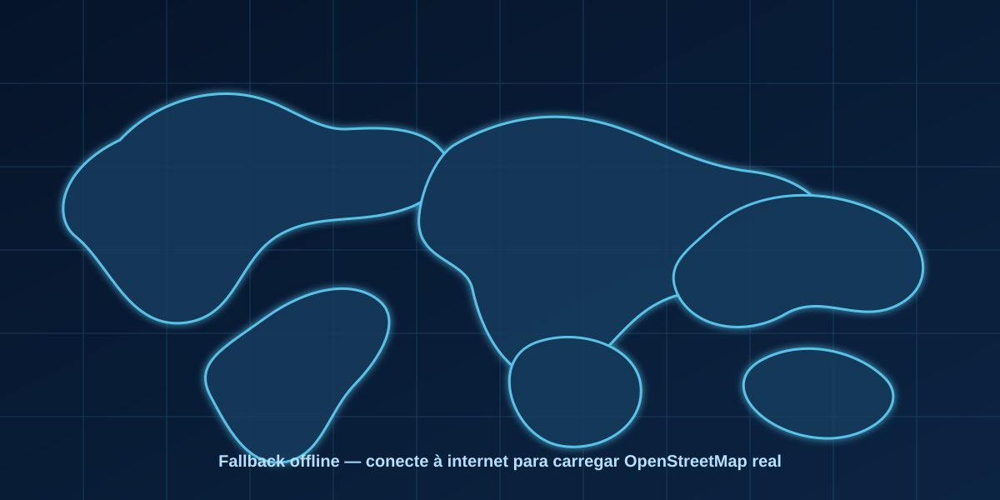

A lista mantém 249 países/territórios possíveis. As bandeiras reais são buscadas em assets/flags pelo código ISO em minúsculo, como br.png, us.png, fr.png.
Mapa Real de Operações Globais
Teatro de dominação mundial
MêsJan/2027

Mapa real indisponível no momento. Conecte à internet para carregar os tiles reais.
CapitalRegiãoBaseCriseFonte do mapa: OpenStreetMap via Leaflet
Fase 34 — indústria bélica do mapa
A campanha agora tem controle de camadas, presets visuais e foco rápido para comandar o mapa.
Fase 9Manutenção, desgaste, baixas, reposição de lotes e custo real de guerra longa.Fase 10Terceira Guerra Mundial: blocos, ultimatos, sanções, invasões e crise nuclear.Fase 11Objetivos de campanha, vitórias por dominação, dissuasão e supremacia econômica.Fase 12Jogabilidade mobile, guia do comandante, bandeiras reais e todos os países possíveis.Fase 13Mundo vivo: IA dos países, crescimento militar, postura, mobilização e crises contra o jogador.Fase 14Guerra terrestre profunda: frentes, ocupação, resistência e controle regional.